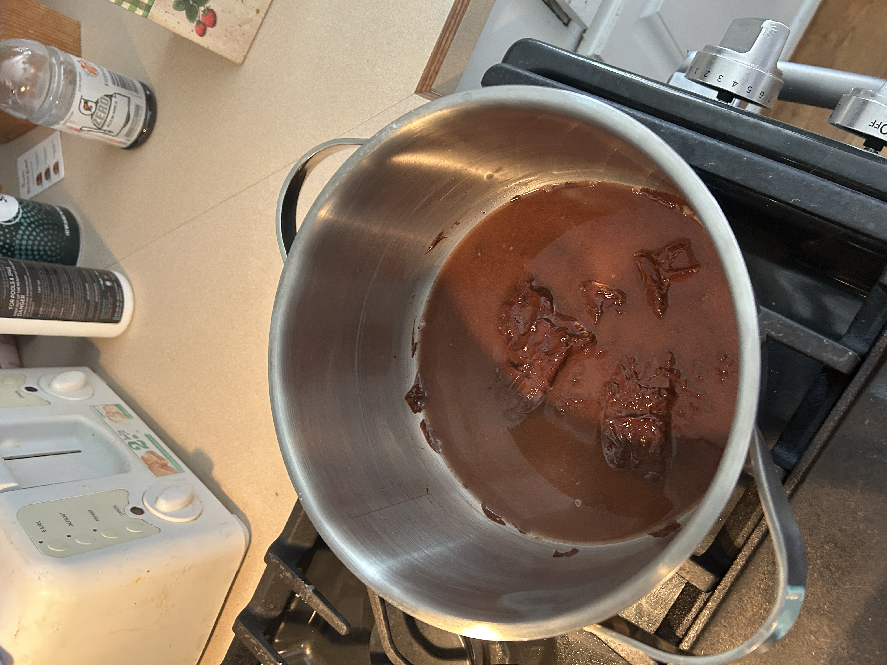
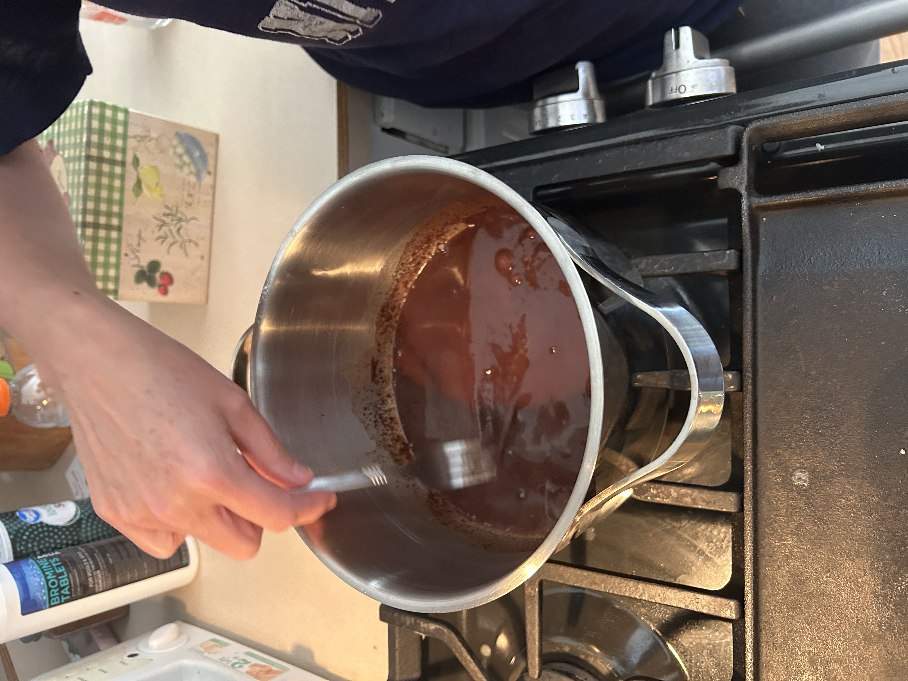

1. Boiling Water and Chocolate
Melt German sweet chocolate carefully in hot water so it doesn’t burn.


These videos capture the real moments of making Grandma’s cake and frosting — from melting chocolate to finishing the fluffy whipped topping.
Melt German sweet chocolate carefully in hot water so it doesn’t burn.
Beat butter and sugar until light and fluffy using a stand mixer.
This is a step within a step, something you have to do before adding the flour for this step. Here I’m sifting the flour before adding it to the mix — this keeps the texture light and even.
After the flour is sifted, then add alternately with buttermilk and chocolate mixture.
Fold in the beaten egg whites gently to maintain the cake’s light texture.
Pour into 3 pans and bake at 350°F for 30–35 minutes. Cool before frosting.
Beat egg white, oleo (butter), and Crisco on high speed.
Add sugar and vanilla, then gradually mix in evaporated milk until smooth.
Continue mixing until thick and fluffy — this is Grandma’s signature finish!